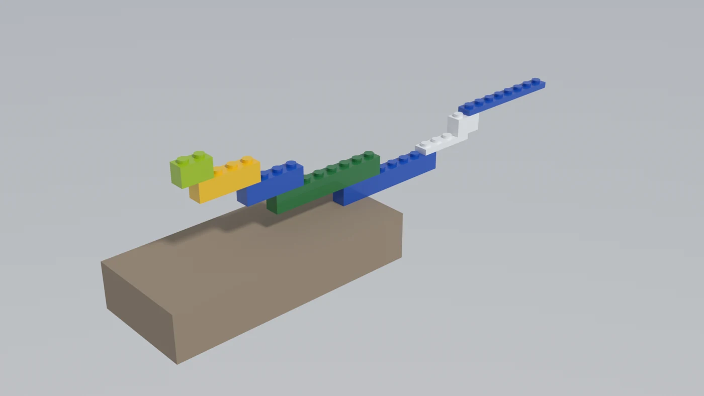

Interlocking construction is an engineering problem with a rare advantage: the part, the joint and the failure all fit into a statics calculation. The experiment uses that to close the whole loop: build, judge, explain why it fell, build again.
The three goals
The longest overhang past the table edge with 8 parts; a bridge over a 96 mm gap carrying 1 N with the fewest parts; the tallest tower that survives a push at the top. For every candidate, rigid statics decides whether it stands and, when it does not, says which joint opened or where the resultant left its support.
The numbers
Overhang: 135.9 mm with 8 parts, peak stud tension at 0.333 N, 34% of the 0.98 N limit. For comparison, a single brick reaches 31.9 mm, the classic harmonic stack 86.7 mm, and the centre-of-mass bound is 255.2 mm.
Bridge: 3 parts carrying 1.462 N at mid-span, 1.46 times the load asked for. Tower: 153.6 mm with 16 parts, holding 16.4 mN at the top, 1.64 times the push.

The check that decides
Before optimizing anything, the model's own physics was checked against nine closed forms: the harmonic stack, the tipping limit of one brick, the one-stud overhang, the tower push, the support reactions and a plate beam solved by voxel FEA against Timoshenko. All nine passed, with the FEA within 0.4% of Timoshenko (0.0327 mm against 0.0328 mm), and the trust report came out approved, score 1.00, coverage 1.00.

Where the two simulators disagree
Every candidate was replayed in a rigid-body simulator, with the joints intact. Agreement was 90% on the overhang, 100% on the bridge and 75% on the tower. The disagreements teach something: at exactly the harmonic-stack limit the equilibrium is neutral, the closed form says it stands and the simulator drops it, with the top brick falling 108.8 mm; at 0.99 of the limit it stands, at 1.01 it falls.
The other deviation belongs to the solver, not the model: under the sustained 10 mN push on the best tower, friction in the integrator creeps 0.23 mm at a 1 ms step and 0.03 mm at 0.25 ms. The creep shrinks with the step, so it is a numerical artefact, and it is reported as one.
Search: surrogate against evolution
With 400 physics evaluations per run and five seeds, the surrogate-guided search did not beat plain evolution on any of the three goals: on the overhang, a median of 103.9 mm against 111.9 mm; on the bridge, 8 parts against 5, and only 3 of the 5 seeds found a feasible build; on the tower, 115.2 mm against 118.4 mm. The best single result on the tower, 153.6 mm, came from the surrogate, which does not make up for the worse median.
Why this counts as a product
The loop is the one every project has: generate, judge with physics, explain the failure, refine. The difference is that the judgement is auditable, every rejection comes with its reason, and every number comes with the joint model that produced it.